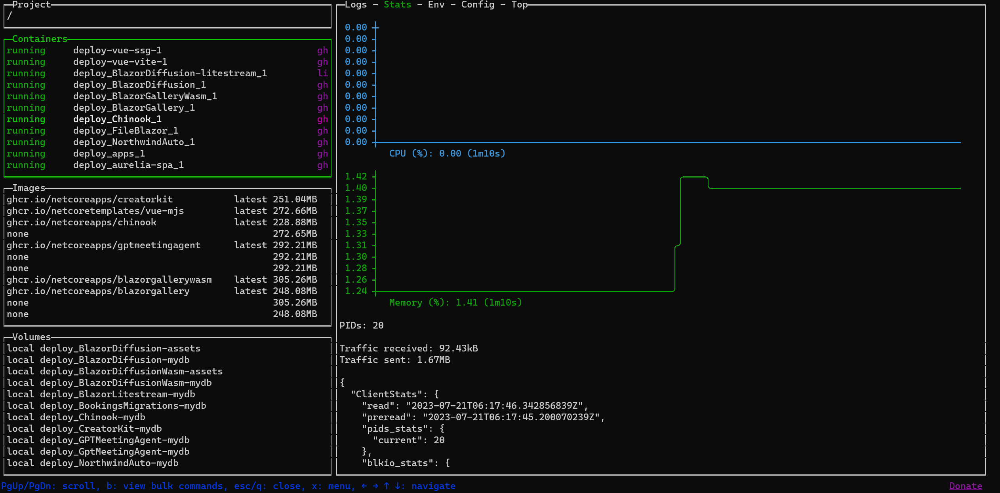

This guide demonstrates a pattern for deploying to a single Linux server via SSH using GitHub Actions and Docker Compose. This pattern of deployment works for any dockerized web application, and can be used with cost-effective hosting providers like Hetzner, Digital Ocean, etc since it only requires a single Linux server with Docker installed.
Understanding the Core Components
Before we get our hands dirty with deployment, let's take a moment to understand the essential components involved in this process. We'll also explain why we've chosen each one and how they contribute to our this cost-effective deployment pipeline.
GitHub and Its Functions
The backbone of our deployment pipeline is GitHub, a platform that provides a host of features to support our goals. Here are the key GitHub features we'll leverage:
- GitHub Actions: These are automated workflows that will handle the process of Continuous Integration (CI) for our application. It checks out code, sets up .NET Core, builds, tests, and creates releases. We'll go into detail about this in the practical section.
- GitHub Action Secrets: Sensitive information like login credentials, tokens, or keys shouldn't be exposed in your codebase. GitHub Action Secrets are encrypted and allow us to store such information securely, which is essential for building and pushing Docker images.
- GitHub Container Registry (GHCR): This is where our Docker images will be stored and versioned. GitHub Actions will build and push Docker images to GHCR, from where our Linux server will pull them during deployment.
- GitHub Repository: The central location where our application's codebase is stored. This is also where we'll configure GitHub Actions and store our Docker Compose files.
Docker Compose
Docker Compose is a tool that helps with the management of multi-container Docker applications. It allows us to define our application's environment in a YAML file (docker-compose.yml), enabling consistent setups across different environments. This will be installed on your target Linux server, where it will be used to pull Docker images and run our application.
Secure Shell (SSH)
SSH is a protocol used for securely connecting to a remote server. In our deployment process, we'll use SSH for copying Docker Compose files and executing commands on the Linux server, such as pulling Docker images and running Docker Compose.
This is done via GitHub Actions where we will use the ssh-action to securely transfer the Docker Compose file to the Linux server, and execute commands remotely.
Linux Server, NGINX, and LetsEncrypt
Our Linux server is where everything comes together. It's where our application will be hosted, and where the Docker Compose file will be executed. But that's not all; we'll set up NGINX reverse proxy on this server to manage HTTP requests and responses between clients and our application.
We're also adding LetsEncrypt into the mix. LetsEncrypt will work in conjunction with NGINX to automate routing, provide Transport Layer Security (TLS), and manage SSL certificates. This combination will ensure our application is secure and readily accessible.
By understanding these core components, we can now piece together our deployment pipeline. But before we proceed, it's essential to ensure you have access to the required tools. Make sure you have a GitHub account, Docker installed on your local machine, access to a Linux server, and the necessary knowledge to work with these tools. Don't worry if you're unsure about any steps; we'll guide you through each stage as we move forward.
Setting Up Your Linux Server
The heart of your web application deployment, the Linux server, requires proper setup and configuration to ensure the deployment and operation of your applications. Here, we'll be using Ubuntu 22.04 as our target server, although you can adapt these instructions for other distributions as well.
Firstly, you need to ensure you have a Linux server at your disposal. This could be a virtual private server (VPS) from any cloud provider, a dedicated server, or even a Linux machine in your local network (provided it can be accessed via GitHub Actions).
Once you have access to your server, follow these steps:
Installing Docker and Docker Compose
Docker is a crucial component that enables us to build, ship, and run applications inside containers. Docker Compose, on the other hand, streamlines the process of managing multi-container Docker applications. Here's how to install them:
- Update your server: Before we start, let's make sure our server has the latest updates. Run the following commands:
sudo apt update sudo apt upgrade -y - Install Docker: Docker provides an official guide to install Docker Engine on Ubuntu, which you can follow here.
By default, this should come with the latest version of Docker Compose. However, if you need to install Docker Compose separately, you can follow the official guide here.
After the installation, confirm that Docker and Docker Compose have been correctly installed by running docker --version and docker compose. The terminal should print the version of Docker and show command options for Docker Compose, respectively.
Setting up NGINX and LetsEncrypt
Next, we will set up NGINX and LetsEncrypt in Docker containers. These are responsible for handling client requests, routing, SSL encryption, and certificate management.
- Create the following YAML file on your Linux server:
version: "3.9"
services:
nginx-proxy:
image: nginxproxy/nginx-proxy
container_name: nginx-proxy
restart: always
ports:
- "80:80"
- "443:443"
volumes:
- conf:/etc/nginx/conf.d
- vhost:/etc/nginx/vhost.d
- html:/usr/share/nginx/html
- dhparam:/etc/nginx/dhparam
- certs:/etc/nginx/certs:ro
- /var/run/docker.sock:/tmp/docker.sock:ro
labels:
- "com.github.jrcs.letsencrypt_nginx_proxy_companion.nginx_proxy"
letsencrypt:
image: nginxproxy/acme-companion:2.2
container_name: nginx-proxy-le
restart: always
depends_on:
- "nginx-proxy"
environment:
- DEFAULT_EMAIL=you@example.com
volumes:
- certs:/etc/nginx/certs:rw
- acme:/etc/acme.sh
- vhost:/etc/nginx/vhost.d
- html:/usr/share/nginx/html
- /var/run/docker.sock:/var/run/docker.sock:ro
networks:
default:
name: nginx
volumes:
conf:
vhost:
html:
dhparam:
certs:
acme:
- Start the containers: Use the command
docker compose up -din the directory containing yourdocker-compose.ymlfile to start the NGINX reverse proxy and LetsEncrypt containers.
With Docker, Docker Compose, NGINX, and LetsEncrypt setup, your Linux server is ready for deployments. Note that these are one-off tasks. Once set up, you won't need to repeat them for deploying additional applications.
For subsequent deployments, GitHub Actions will take care of creating necessary directories and SCP copying the docker-compose.yml file from the repository to the target Linux server. This allows your deployment pipeline to be flexible, repeatable, and reliable.

GitHub: The Backbone of Your Deployment Pipeline
In this section, we'll explore how to set up a GitHub-based deployment pipeline, using GitHub Actions for automation, GitHub Secrets for security, and the GitHub Container Registry for Docker image storage. You'll see how these tools can provide a powerful, end-to-end solution for building and deploying your applications.
Understanding GitHub Actions
GitHub Actions allow you to create custom software development life cycle (SDLC) workflows directly in your GitHub repository. These workflows are described in YAML files and can be triggered by GitHub events (such as pushing code, creating releases, etc.), on a schedule, or manually.
In the provided YAML, the deployment workflow is triggered on three events:
- A new GitHub release is published.
- The build workflow has completed on
mainormasterbranches. - Manual trigger for rolling back to a specific release or redeploying the latest version.
The jobs are divided into two parts: push_to_registry and deploy_via_ssh. The first job builds a Docker image from the repository's code and pushes it to GitHub's container registry. The second job deploys the image to a remote server via SSH.
Configuring GitHub Action Secrets
GitHub Secrets are encrypted environment variables created in your repository settings. They're a secure way to store and use sensitive information in GitHub Actions, like credentials, SSH keys, tokens, etc. Without them, this sensitive information would be exposed in your public repository.
The YAML script uses the following secrets:
DEPLOY_HOST: The IP address or domain name of the server where the application is deployed.DEPLOY_USERNAME: The username used for SSHing into the deployment server.DEPLOY_KEY: The private SSH key for the deployment server.LETSENCRYPT_EMAIL: The email used for Let's Encrypt certificate registration.
These secrets can be set up in your repository settings under the Secrets section.

Go to `Settings` -> `Secrets` -> `New repository secret`
Leveraging GitHub Container Registry
The GitHub Container Registry is a place to store Docker images within GitHub, which can then be used in your GitHub Actions workflows or pulled directly to any server with Docker installed.
The following release.yml can be used with any dockerized application with a docker-compose.yml,docker-compose.prod.yml with an app and app-migration services, and the secrets above.
name: Release
permissions:
packages: write
contents: write
on:
# Triggered on new GitHub Release
release:
types: [published]
# Triggered on every successful Build action
workflow_run:
workflows: ["Build"]
branches: [main,master]
types:
- completed
# Manual trigger for rollback to specific release or redeploy latest
workflow_dispatch:
inputs:
version:
default: latest
description: Tag you want to release.
required: true
jobs:
push_to_registry:
runs-on: ubuntu-22.04
if: ${{ github.event.workflow_run.conclusion != 'failure' }}
steps:
# Checkout latest or specific tag
- name: checkout
if: ${{ github.event.inputs.version == '' || github.event.inputs.version == 'latest' }}
uses: actions/checkout@v3
- name: checkout tag
if: ${{ github.event.inputs.version != '' && github.event.inputs.version != 'latest' }}
uses: actions/checkout@v3
with:
ref: refs/tags/${{ github.event.inputs.version }}
# Assign environment variables used in subsequent steps
- name: Env variable assignment
run: echo "image_repository_name=$(echo ${{ github.repository }} | tr '[:upper:]' '[:lower:]')" >> $GITHUB_ENV
# TAG_NAME defaults to 'latest' if not a release or manual deployment
- name: Assign version
run: |
echo "TAG_NAME=latest" >> $GITHUB_ENV
if [ "${{ github.event.release.tag_name }}" != "" ]; then
echo "TAG_NAME=${{ github.event.release.tag_name }}" >> $GITHUB_ENV
fi;
if [ "${{ github.event.inputs.version }}" != "" ]; then
echo "TAG_NAME=${{ github.event.inputs.version }}" >> $GITHUB_ENV
fi;
- name: Login to GitHub Container Registry
uses: docker/login-action@v2
with:
registry: ghcr.io
username: ${{ github.actor }}
password: ${{ secrets.GITHUB_TOKEN }}
# Build and push new docker image, skip for manual redeploy other than 'latest'
- name: Build and push Docker images
uses: docker/build-push-action@v3
if: ${{ github.event.inputs.version == '' || github.event.inputs.version == 'latest' }}
with:
file: Dockerfile
context: .
push: true
tags: ghcr.io/${{ env.image_repository_name }}:${{ env.TAG_NAME }}
deploy_via_ssh:
needs: push_to_registry
runs-on: ubuntu-22.04
if: ${{ github.event.workflow_run.conclusion != 'failure' }}
steps:
# Checkout latest or specific tag
- name: checkout
if: ${{ github.event.inputs.version == '' || github.event.inputs.version == 'latest' }}
uses: actions/checkout@v3
- name: checkout tag
if: ${{ github.event.inputs.version != '' && github.event.inputs.version != 'latest' }}
uses: actions/checkout@v3
with:
ref: refs/tags/${{ github.event.inputs.version }}
- name: repository name fix and env
run: |
echo "image_repository_name=$(echo ${{ github.repository }} | tr '[:upper:]' '[:lower:]')" >> $GITHUB_ENV
echo "domain=${{ secrets.DEPLOY_HOST }}" >> $GITHUB_ENV
echo "letsencrypt_email=${{ secrets.LETSENCRYPT_EMAIL }}" >> $GITHUB_ENV
echo "TAG_NAME=latest" >> $GITHUB_ENV
if [ "${{ github.event.release.tag_name }}" != "" ]; then
echo "TAG_NAME=${{ github.event.release.tag_name }}" >> $GITHUB_ENV
fi;
if [ "${{ github.event.inputs.version }}" != "" ]; then
echo "TAG_NAME=${{ github.event.inputs.version }}" >> $GITHUB_ENV
fi;
- name: Create .env file
run: |
echo "Generating .env file"
echo "# Autogenerated .env file" > .env
echo "HOST_DOMAIN=${{ secrets.DEPLOY_HOST }}" >> .env
echo "LETSENCRYPT_EMAIL=${{ secrets.LETSENCRYPT_EMAIL }}" >> .env
echo "IMAGE_REPO=${{ env.image_repository_name }}" >> .env
echo "RELEASE_VERSION=${{ env.TAG_NAME }}" >> .env
# Copy docker-compose and .env files to target server
- name: copy files to target server via scp
uses: appleboy/scp-action@v0.1.3
with:
host: ${{ secrets.DEPLOY_HOST }}
username: ${{ secrets.DEPLOY_USERNAME }}
port: 22
key: ${{ secrets.DEPLOY_KEY }}
source: "./docker-compose.yml,./docker-compose.prod.yml,./.env"
target: "~/.deploy/${{ github.event.repository.name }}/"
- name: Run remote db migrations
uses: appleboy/ssh-action@v0.1.5
env:
APPTOKEN: ${{ secrets.GITHUB_TOKEN }}
USERNAME: ${{ secrets.DEPLOY_USERNAME }}
with:
host: ${{ secrets.DEPLOY_HOST }}
username: ${{ secrets.DEPLOY_USERNAME }}
key: ${{ secrets.DEPLOY_KEY }}
port: 22
envs: APPTOKEN,USERNAME
script: |
echo $APPTOKEN | docker login ghcr.io -u $USERNAME --password-stdin
cd ~/.deploy/${{ github.event.repository.name }}
docker compose -f ./docker-compose.yml -f ./docker-compose.prod.yml pull
docker compose -f ./docker-compose.yml -f ./docker-compose.prod.yml up app-migration
# Deploy Docker image with your application using `docker compose up app` remotely
- name: remote docker-compose up via ssh
uses: appleboy/ssh-action@v0.1.5
env:
APPTOKEN: ${{ secrets.GITHUB_TOKEN }}
USERNAME: ${{ secrets.DEPLOY_USERNAME }}
with:
host: ${{ secrets.DEPLOY_HOST }}
username: ${{ secrets.DEPLOY_USERNAME }}
key: ${{ secrets.DEPLOY_KEY }}
port: 22
envs: APPTOKEN,USERNAME
script: |
echo $APPTOKEN | docker login ghcr.io -u $USERNAME --password-stdin
cd ~/.deploy/${{ github.event.repository.name }}
docker compose -f ./docker-compose.yml -f ./docker-compose.prod.yml pull
docker compose -f ./docker-compose.yml -f ./docker-compose.prod.yml up app -d
In the provided YAML, the image is built and pushed to the registry in the push_to_registry job with the docker/build-push-action@v3 action.
- name: Build and push Docker images
uses: docker/build-push-action@v3
if: ${{ github.event.inputs.version == '' || github.event.inputs.version == 'latest' }}
with:
file: Dockerfile
context: .
push: true
tags: ghcr.io/${{ env.image_repository_name }}:${{ env.TAG_NAME }}
After building the Docker image, it is tagged and pushed to the GitHub Container Registry.
Using GitHub Action Secrets for Multiple Applications
In the YAML provided, the secrets are used in multiple places:
GITHUB_TOKEN: This is a system-generated token used by GitHub Actions to authorize interactions with the GitHub API and other services. Within the context of this workflow,GITHUB_TOKENis used to authenticate Docker, allowing it to push images to and pull images from the GitHub Container Registry. This is generated for you based on the permissions you give the GitHub Actions workflow.DEPLOY_HOST: This secret represents the hostname to which SSH connections will be made during the deployment phase. This could be an IP address or a subdomain, as long as it's correctly set with an A record pointing to your server.DEPLOY_USERNAME: This secret corresponds to the username required for logging into the deployment server via SSH. The value for this secret can vary depending on your server setup. For example, it could be 'ubuntu', 'ec2-user', 'root', etc., depending on the operating system and configuration of the deployment server.DEPLOY_KEY: This is the private SSH key used for remote access to your deployment server or application host. This secret is crucial for securing your SSH connections. It's important to generate this key securely and to store it safely within your GitHub secrets to ensure your server remains secure.LETSENCRYPT_EMAIL: This secret represents the email address used for Let's Encrypt certificate registration. Let's Encrypt provides free automated TLS (Transport Layer Security) certificates, which help secure the communication between your server and its clients. The email is used to receive important notices.
These secrets are utilized in both jobs, and they provide a secure way to use sensitive data across multiple steps.
# Copy only the docker-compose.yml to remote server home folder
- name: copy files to target server via scp
uses: appleboy/scp-action@v0.1.3
with:
host: ${{ secrets.DEPLOY_HOST }}
username: ${{ secrets.DEPLOY_USERNAME }}
port: 22
key: ${{ secrets.DEPLOY_KEY }}
source: "./docker-compose.yml,./docker-compose.prod.yml,./.env"
target: "~/.deploy/${{ github.event.repository.name }}/"
In the example above, secrets are used to provide the scp-action with necessary information to copy our docker-compose.yml,docker-compose.prod.yml, and generated .env file to the remote server.
How They All Work Together
Having a clear grasp of the components involved in our deployment pipeline, it's now time to delve into how they work together end to end to deploy your dockerized application. This section will help you visualize the bigger picture, breaking down the deployment process into a series of understandable steps.
Setting the Stage: The Deployment Process
The deployment process is a series of operations that involve our main actors: GitHub, Docker, and your Linux server. Here is how each step unfolds:
- The process begins when the user triggers an event such as a push to the
mainormasterbranch, creates a release, or manually triggers a dispatch. - The GitHub repository responds to this by initiating the workflow defined in our GitHub Action.
- The GitHub Action then retrieves the necessary secrets stored in GitHub Action Secrets. These are essential for secure operations such as logging into the GitHub Container Registry (GHCR).
- After logging in, the GitHub Action builds the Docker image from your application's source code and pushes the image to GHCR.
- Once the Docker image is securely stored in GHCR, the GitHub Action uses Secure Copy Protocol (SCP) to transfer the
docker-compose.yml,docker-compose.prod.yml, and.envfiles to your remote Linux server. - Using SSH, the GitHub Action then logs into the remote server and runs the database migrations service defined in your
docker-compose.ymlfile called theapp-migrateservice. - Finally, the GitHub Action instructs your server to pull the new Docker image from GHCR and start your application using Docker Compose.

Remember, this series of steps repeats each time a change triggers the GitHub Action, ensuring that your application is continuously integrated and deployed.
Flexibility
It's important to note that this process is not exclusive to a specific kind of application. The versatility of Docker allows us to adapt this process to deploy any web application that can be containerized using Docker, giving you a reliable and repeatable deployment process for a broad range of web applications.
Monitoring with LazyDocker
LazyDocker is a terminal UI for both Docker and Docker Compose. It allows you to monitor your Docker containers and services in real-time, giving you a visual representation of your application's health.
Part of what makes LazyDocker such an awesome tool is that you can use it anywhere from a terminal.

To run it as a docker container itself, you can use the following command.
docker run --name lazydocker --rm -it -v /var/run/docker.sock:/var/run/docker.sock -v ~/.lazydocker:/.config/jessedufffield/lazydocker lazyteam/lazydocker
Or better yet, use it as an alias in your .bashrc or .zshrc file.
alias lazydocker="docker run --name lazydocker --rm -it -v /var/run/docker.sock:/var/run/docker.sock -v ~/.lazydocker:/.config/jessedufffield/lazydocker lazyteam/lazydocker"
So you can run lazydocker easily from your terminal.
Concrete Example: Deploying a .NET Application
Let's see how you can use it to deploy a specific application. In this section, we will look at how to deploy a .NET application using the release.yml workflow.
It needs 3 files to run, as well as some GitHub Actions secrets like DEPLOY_HOST, DEPLOY_USERNAME, DEPLOY_KEY, and LETSENCRYPT_EMAIL.
docker-compose.yml
This file is used by Docker Compose to define the services that make up your application, so they can be run together in an isolated environment.
The release.yml expects a web application service called app and a database migration service called app-migration to be declared.
version: "3.9"
services:
app:
build: .
restart: always
ports:
- "5000:80"
environment:
VIRTUAL_HOST: ${HOST_DOMAIN}
LETSENCRYPT_HOST: ${HOST_DOMAIN}
LETSENCRYPT_EMAIL: ${LETSENCRYPT_EMAIL}
volumes:
- app-mydb:/app/App_Data
# Dotnet migrations using ServiceStack AppTasks
app-migration:
build: .
restart: "no"
profiles:
- migration
command: --AppTasks=migrate
volumes:
- app-mydb:/app/App_Data
volumes:
app-mydb:
This file is also designed to be used in a local development environment. It uses the build keyword to build the Docker image from the Dockerfile in the current directory.
docker-compose.prod.yml
This file is similar to docker-compose.yml, but it is specifically tailored for your production environment. Instead of building from the Dockerfile like in the development version, it pulls a specific image from a repository (ghcr.io/${IMAGE_REPO}:${RELEASE_VERSION}) which come from a .env file.
It also connects to an external network (nginx) which is our reverse proxy on our target Linux server.
version: "3.9"
services:
app:
image: ghcr.io/${IMAGE_REPO}:${RELEASE_VERSION}
restart: always
ports: !reset ["80"]
container_name: ${IMAGE_REPO}-app
environment:
VIRTUAL_HOST: ${HOST_DOMAIN}
LETSENCRYPT_HOST: ${HOST_DOMAIN}
LETSENCRYPT_EMAIL: ${LETSENCRYPT_EMAIL}
volumes:
- app-mydb:/app/App_Data
app-migration:
image: ghcr.io/${IMAGE_REPO}:${RELEASE_VERSION}
restart: "no"
container_name: ${IMAGE_REPO}-app-migration
profiles:
- migration
command: --AppTasks=migrate
volumes:
- app-mydb:/app/App_Data
networks:
default:
external: true
name: nginx
volumes:
app-mydb:
Dockerfile
The Dockerfile is a text document that contains all the commands a user could call on the command line to assemble an image. In this example, it first creates a build environment based on dotnet/sdk:6.0-focal, copies your application code into the container, and restores any necessary .NET dependencies. It then switches to your application's directory and publishes your application in release mode. Finally, it creates the runtime environment based on dotnet/aspnet:6.0-focal, copies the built application from the previous stage, and sets the Docker entrypoint to run your application.
# Example dotnet app built from Dockerfile
FROM mcr.microsoft.com/dotnet/sdk:6.0-focal AS build
WORKDIR /app
COPY . .
RUN dotnet restore
WORKDIR /app/MyApp
RUN dotnet publish -c release -o /out --no-restore
FROM mcr.microsoft.com/dotnet/aspnet:6.0-focal AS runtime
WORKDIR /app
COPY --from=build /out .
ENTRYPOINT ["dotnet", "MyApp.dll"]
.env (generated)
This file, .env, is a plain text file that stores environment variables for your Docker containers. Docker Compose automatically looks for this file in the same deployment directory as your docker-compose.yml and docker-compose.prod.yml files, and variables defined in .env can be read into the Compose file. The variables in this file could be secrets, URLs, or other configuration values. The .env file itself is typically not included in source control and instead, you might include a .env.example file to highlight the required environment variables.
This means when using docker-compose.yml locally, you can have a .env file with your local database credentials, and when using docker-compose.prod.yml on your server, you can have a .env file with your production database credentials, for example.
Applying the Deployment Pattern: A Practical Guide
The following step-by-step guide will show you how to create, prepare, and deploy your .NET application using best practices.
1. Building Blocks: Creating Your .NET Application
Kick-off your development process by creating your .NET application. In this example, we use the ServiceStack's x tool to create our web app from a template with the command x new web MyApp.
Your application will have a structure that may look something like this:
MyApp/
|-- MyApp/
| |-- wwwroot/
| |-- Configure.AppHost.cs
| |-- Program.cs
|-- MyApp.ServiceModel/
|-- MyApp.ServiceInterface/
|-- MyApp.Tests/
|-- MyApp.sln
|-- Dockerfile
|-- docker-compose.yml
|-- docker-compose.prod.yml
|-- .gitignore
2. Join the Hub: Pushing Your Application to GitHub
Once your application is set up, you can push it to GitHub. JetBrains Rider IDE has a handy "Share On GitHub" functionality that streamlines this process. Here's how you use it:
- Right-click on your solution.
- Select
Git -> GitHub -> Share Project on GitHub. - Enter your repository name and description.
- Click
Share.
Your .NET application is now on GitHub, ready for collaboration and continuous integration.
3. Implementing GitHub Actions for CI
To automate the build and test process every time you push to your GitHub repository, you can use GitHub Actions. A minimal .NET workflow file, build.yml, can be created and placed in the .github/workflows directory. Here's a minimal example:
name: Build
on: [push]
jobs:
build:
runs-on: ubuntu-latest
steps:
- uses: actions/checkout@v2
- name: Setup .NET
uses: actions/setup-dotnet@v1
with:
dotnet-version: '6.0.x'
- name: Restore dependencies
run: dotnet restore
- name: Build
run: dotnet build --no-restore
You can also add a test step to run your tests here.
This will run alongside any other workflows, like the release.yml outlined above, to ensure your application is always in a deployable state.
When the Build step completes, it will trigger the release.yml workflow.
4. Setting Up and Using GitHub Action Secrets
Next, you'll need to create secrets for sensitive data. In GitHub, you can store them as "Secrets". Follow these steps:
- Go to your GitHub repository and click on
Settings. - Click on
Actions->Secretsin the left sidebar. - Click on
New repository secret. - Enter the
NameandValueof the secret. - Click on
Add secret.
Create the following secrets:
DEPLOY_HOST: This secret represents the hostname to which SSH connections will be made during the deployment phase. This could be an IP address or a subdomain, as long as it's correctly set with an A record pointing to your server.DEPLOY_USERNAME: This secret corresponds to the username required for logging into the deployment server via SSH.DEPLOY_KEY: This is the private SSH key used for remote access to your deployment server or application host.LETSENCRYPT_EMAIL: This secret represents the email address used for Let's Encrypt certificate registration.
5. Finding Your Home: Create an A Record DNS Entry
To link your domain to your server, you need to create an A Record DNS entry. Here's a generalized step-by-step:
- Go to your DNS provider's website and sign in.
- Find the domain you want to update and go to its DNS records.
- Create a new record. For the type, select
A. - Enter your server's IP address in the
ValueorPoints tofield. - Save the changes.
Now, you can populate the DEPLOY_HOST secret in GitHub with your DNS.
This will be used by the release.yml workflow to deploy your application to your server via SSH.
6. Configuring Linux Server with Docker
By now, you should have a Linux server with Docker installed, and the NGINX reverse proxy with LetsEncrypt running, as we did in the previous section.
Your server will also need to be accessible via SSH on port 22 so that GitHub Actions can deploy your application.
7. Commit Change and Deploy Application
Now, commit any changes and push to your GitHub repository. If you've set up your GitHub Actions correctly, the CI will kick off. After a successful build, your application will be deployed and accessible from your specified domain.
Deploying Multiple Applications on the Same Server
Same Pattern, Multiple Applications
One of the core strengths of Docker is the ability to isolate and manage applications in their individual containers. This means you can deploy numerous applications, each from its separate GitHub repository, onto the same Linux server. All these applications can coexist and operate independently, provided each one is correctly dockerized. The release pattern remains unchanged and consistent to apply.
1. MyApp1/ -> GitHub Repo 1 -> Docker Image 1 -> Server (Container 1)
2. MyApp2/ -> GitHub Repo 2 -> Docker Image 2 -> Server (Container 2)
3. MyApp3/ -> GitHub Repo 3 -> Docker Image 3 -> Server (Container 3)

Organization Secrets
To maintain a streamlined deployment process when dealing with multiple applications, you can utilize the GitHub Actions' Organization Secrets. This feature allows secrets to be shared across multiple repositories in an organization, which saves time and reduces redundancy. The only secret that needs to be set up individually for each repository would be the DEPLOY_HOST and corresponding DNS for each application.
To set up organization secrets:
- Go to your GitHub organization's settings.
- Click on
Secretsin the left sidebar. - Click on
New organization secret. - Enter the
NameandValueof the secret. - Click on
Add secret.
Each deployed application now shares the organization-level secrets, streamline the setup process for new applications to a new DNS entry and DEPLOY_HOST environment variable.
And since every GitHub Repository in the organization is unique, there is no conflicting files deployed to the same server.
Cost Optimization: Using a Single Server
In our previous post,In pursuit of the best value US cloud provider, we looked for the most cost-effective cloud provider. We found that Hetzner Cloud offers the best value for money, with a powerful server costing around $10 USD per month. This means you can deploy multiple applications on a single server, saving you money and resources.
To host lots of our demo applications, we are doing exactly this, meaning we have a per container of less than $0.50 USD per month.

Conclusion
By avoiding Kubernetes, you can have less complex control your deployment process, and have more control over your applications. You can also save money by using a single server to host multiple applications. The release pattern is a flexible, yet effective way to deploy your applications, and it can be applied to any programming language or framework.
Feedback
If you have any feedback on this article, please let us know by commenting below, joining our Discord, GitHub Discussions, or Customer Forums.